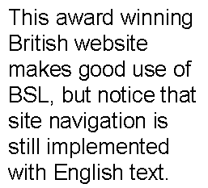
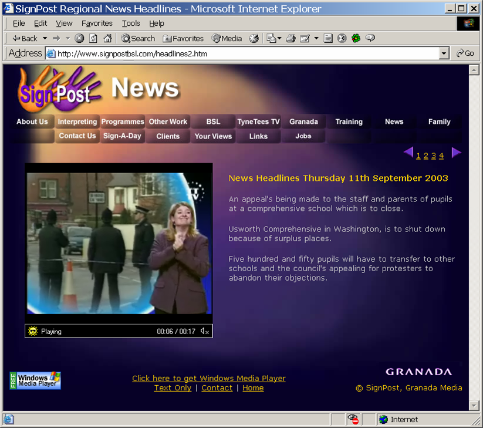

| Created with the Web Accessibility Wizard |
Example: Sign on the Web, not of the Web
This award winning British website makes good use of BSL, but notice that site navigation is still implemented with English text.
 Long Description: The Web page contains a video showing a newscaster signing the news in BSL in front of an image of some policemen. Surrounding the video is an English based navigation system.
Slide Links:
| Text Only Version |